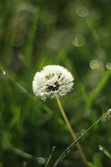

Things I have done
- Cared for residents and horses at a therapeutic riding center.
- Aide to the elderly
- Hostess for a theartre for the last four years.
- Volutered my time to sustainability and working with kids
Where I would like to take my career
- Bring solutions to some of the worlds biggest problems
- Become a part of a team that cares about the enviroment and its current condition
- Be an inspiration to others around me and help as much as possible
- Find a way to incorporate my newly developed coding skills to advance the field Computational Sustainability
I hope that one day I will aide in the preservation of our enviroment and its inhabitants. I hope that I can become a part
of the movement to combine coding with sustainabilty. While addressing issues such as hypoxia and the destruction of coral reefs.I hope to help a
green company produce renewable resources that are affordable and easy to use.I hope to be an inspiration to myself, my children and others. I hope that I can help others understand the
beauty of our planet and how much it desperatly needs us to change the way we live.
A few hobbies of mine
- Painting the world in color
- craft lady of steel
- photography
- anthropology and archeaology
- upcycling
A few of my photos
